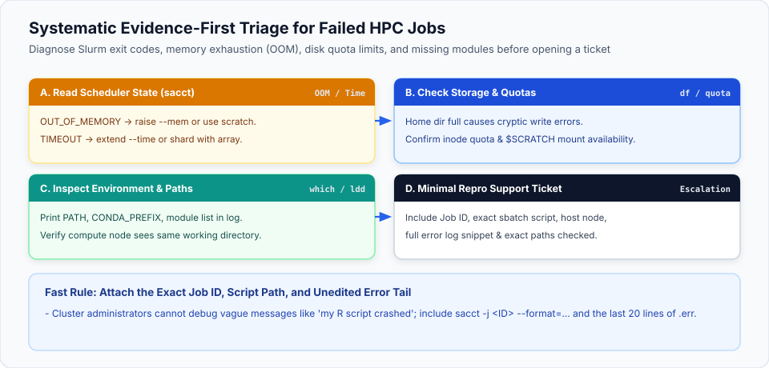

HPC Troubleshooting and Support
Nasir Mahmood Abbasi, PhD
Bioinformatics Educator
When a Slurm job dies overnight or sits pending for hours, resubmitting blindly wastes queue priority and hides the cause. Reading the scheduler record alongside your log files and storage quotas usually pinpoints the failure in a few minutes or gives cluster engineers everything they need in one ticket.
Format: Conceptual guide. Walk through a structured, evidence-first diagnosis when an HPC batch job crashes, hits OOM, or stalls, then compile a crisp support packet from your own job logs, script paths, and Slurm accounting output.
Learning objectives, prerequisites, and time
Estimated time: 15-20 minutes. By the end of this guide, you will be able to:
- Query live queue reasons (
squeue) and post-job accounting records (sacct,seff,scontrol) to see how Slurm stopped a job. - Decode Slurm job states and
ExitCodevalues (X:Y) alongside shell exit codes such as127and137. - Spot storage block or inode quota exhaustion, missing modules, and
conda activatefailures underset -euo pipefail. - Run a minimal subset test and assemble a concise, redacted support ticket when cluster-side help is needed.
Prerequisites: Cluster access, your submission script (for example, run_alignment.sbatch), the returned Slurm job ID, and its log files (slurm-<jobid>.out or custom --output / --error paths). If you are new to submitting jobs, start with Basic Slurm Commands and Writing Slurm Job Scripts.

sacct state and memory metrics, check disk and inode quotas, verify compute-node environment paths, and attach only the minimal evidence to a support ticket.Four-step triage workflow
Collect evidence before editing your submission script, and change only one setting at a time when retesting. Skipping straight to doubling --mem or --time often masks a broken path, a full home directory, or a single-line script bug.
1) Check live queue state (squeue) or final accounting (sacct, seff)
Why first: Slurm separates what the scheduler did to the job from what your software printed. If the job has not started yet, squeue explains why it is waiting. Once it finishes or crashes, sacct reports the final state, exit code, walltime, requested memory, and peak physical memory used (MaxRSS, maximum resident set size).
For a job still in the queue, run squeue -j 1234567 (or squeue --start -j 1234567 to see an estimated start time) and read the NODELIST(REASON) column:
REASON | Meaning | Appropriate action |
|---|---|---|
Priority | Higher-priority jobs are ahead in the fair-share queue. | Wait normally; do not cancel and resubmit, which resets queue age. |
Resources | Your job is eligible, but enough free CPUs, RAM, or GPUs are not yet available on a node. | Wait normally, or check whether an oversized --mem or --time request blocks backfilling. |
QOSMaxJobsPerUserLimit / AssocGrp*Limit | Your user or account has hit a concurrent-job, CPU, or memory cap. | Wait for running jobs to finish; use job arrays with %N throttling for large cohorts. |
ReqNodeNotAvail | Requested nodes are down, draining, missing a requested --constraint, or reserved for maintenance before your --time would finish. | Check sinfo -R and cluster maintenance notices; shorten --time if your job fits before the reservation window. |
Once a job leaves the queue, query Slurm accounting with sacct (replace 1234567 with your job ID). Widen columns such as JobID%15, JobName%20, or MaxRSS%15 if Slurm truncates values with a trailing +:
# Show allocation and step summary (omit -X so .batch and step MaxRSS rows appear)
sacct -j 1234567 --format=JobID%15,JobName%20,State,ExitCode,Elapsed,ReqMem%12,MaxRSS%15
# Single-screen efficiency summary (when installed on your cluster)
seff 1234567
# Detailed live or recently finished job metadata (paths, node list, WorkDir, StdErr)
scontrol show job 1234567
Example output (illustrative): Below is what a typical failed alignment job looks like in sacct and seff when it hits its memory ceiling:
$ sacct -j 1234567 --format=JobID%15,JobName%20,State,ExitCode,Elapsed,ReqMem%12,MaxRSS%15
JobID JobName State ExitCode Elapsed ReqMem MaxRSS
--------------- -------------------- ---------- -------- ---------- ------------ ---------------
1234567 bwa_sample04 OUT_OF_ME+ 0:9 00:18:42 32Gn
1234567.batch batch OUT_OF_ME+ 0:9 00:18:42 31.94G
1234567.extern extern COMPLETED 0:0 00:18:42 1.12M
$ seff 1234567
Job ID: 1234567
Cluster: biohpc
User/Group: researcher/labgrp
State: OUT_OF_MEMORY (exit code 0)
Cores: 8
CPU Utilized: 01:42:10
CPU Efficiency: 68.29% of 02:29:36 core-walltime
Job Wall-clock time: 00:18:42
Memory Utilized: 31.94 GB
Memory Efficiency: 99.81% of 32.00 GBHow to read these fields accurately:
- Why the top row has a blank
MaxRSS: Slurm records the reservation on the parent allocation row (1234567) and measures actual process memory on the child steps (1234567.batchfor the batch script, or1234567.0for commands launched viasrun). Usingsacct -Xhides step rows, so omit-Xwhen checking memory. ReqMemsuffixes: On older Slurm releases,32Gnmeans 32 GB per node (from--mem=32G), whereas4Gcmeans 4 GB per CPU (from--mem-per-cpu=4G); multiplycvalues by your allocated CPUs to compare againstMaxRSS. (Newer Slurm releases aligned withReqTRESreport total job memory such as32Gwithoutn/csuffixes; addReqTRESto--formator checkscontrol show jobif you need the per-node vs. per-CPU breakdown.)- Why
MaxRSScan lag behind OOM: Slurm samples memory periodically according to the cluster'sJobAcctGatherFrequencysetting (often every 30 seconds). A sudden memory spike in R or Python can trigger a Linux cgroup out-of-memory kill between polls, leavingState=OUT_OF_MEMORYeven when recordedMaxRSSlooks belowReqMem. ExitCodenotation (X:Y):Xis the 8-bit exit status returned by the script or command (0means clean exit;1-255indicates an error, including shell128+Nsignal codes such as137or139), andYis the terminating signal number (9forSIGKILL,15forSIGTERM,11forSIGSEGV). A state ofCOMPLETEDwith0:0confirms only that the shell script exited with status 0, not that scientific outputs are present or valid.scontrol show jobretention:scontrolreads from the active controller memory and purges finished jobs quickly (often within minutes). Use it for live or just-finished jobs to verifyWorkDir,StdOut,StdErr, andCommand; rely onsacctfor older jobs.
2) Inspect job logs and check storage and inode quotas
Why second: Scheduler records tell you Slurm killed or ended a step, while the log file shows the last tool error. Just as often on HPC clusters, a job fails with cryptic write errors because your $HOME quota or file-count limit (inodes) is full, or because a tool filled the compute node's small local /tmp directory.
Unless your script sets separate --output and --error paths, Slurm merges stdout and stderr into slurm-<jobid>.out in the submission directory:
# Inspect the end of the job log (adjust path if --output or --error was set)
tail -n 200 slurm-1234567.out
# Check block space (GB) and inode count (number of files) on home and scratch
df -h . "$HOME"
df -i . "$HOME"
# Check user quota (site commands vary: quota -s, myquota, or lfs quota for Lustre)
quota -s 2>/dev/null || echo "Check your cluster docs for the site quota command"What to look for:
- Cgroup OOM banner: Lines near the end of stderr such as
slurmstepd: error: Detected 1 oom-kill event(s) in StepId=1234567.batch. Some of your processes may have been killed by the cgroup out-of-memory handler.confirm Linux cgroups terminated a process for exceeding its memory limit. - Block space vs. inode exhaustion: If
df -hshows free gigabytes on$HOMEor/scratch, checkdf -i. WhenIUse%reaches100%, creating any new file fails withDisk quota exceededorNo space left on device. Conda/pip package caches, R libraries, and Nextflow/Snakemake work directories are common inode hogs; move caches and heavy outputs off$HOMEonto scratch storage. - Compute-node
/tmpoverflow: Commands likesort,samtools sort, and Java tools (GATK/Picard) default to/tmp, which may only hold a few gigabytes on a compute node. Setexport TMPDIR="/scratch/$USER/tmp"(after creating the directory) inside your batch script. - Missing input path on compute node: Errors like
FileNotFoundError: data/reads.fastq.gzmean the path does not exist relative to the job's working directory (checkSLURM_SUBMIT_DIR) or lives on a login-only filesystem not mounted on compute nodes.
3) Verify the compute-node environment (module, Conda/Micromamba, ldd)
Why third: Interactive login shells read startup files such as ~/.bashrc, whereas batch jobs start in a clean or site-defined environment on a compute node. A command that works on the login node can fail inside sbatch with command not found (exit 127), load the wrong version, or miss a shared C library.
Run these checks inside an interactive compute session (for example, via srun --pty bash where permitted) or temporarily at the top of a test batch script:
# Record loaded modules, Conda prefix, and resolved binary path in the job log
module list 2>&1 || true
echo "CONDA_PREFIX=${CONDA_PREFIX:-none}"
echo "PATH=$PATH"
command -v bwa
bwa 2>&1 | grep -m1 '^Version' || true
# Check for missing shared libraries (if any line prints "not found", the binary cannot start)
ldd "$(command -v bwa)" | grep 'not found' || true
Watch out for the set -euo pipefail + conda activate trap: Many bioinformatics batch scripts enable strict Bash mode with set -euo pipefail. In non-interactive Slurm shells, source .../conda.sh and conda activate myenv reference variables such as PS1 or CONDA_PATH_BACKUP that are unset, causing Bash to abort immediately with PS1: unbound variable (ExitCode 1:0). Either bracket activation with set +u and set -u, or invoke tools cleanly with micromamba run -n myenv ... (see Micromamba Environments for Bioinformatics).
4) Reproduce on a tiny subset before resubmitting
Why fourth: Testing 2,500 reads in a 10-minute test job catches broken paths, missing reference index files, and environment bugs immediately instead of queuing for hours. Keep data on approved cluster scratch storage and never copy protected human/clinical reads to a local laptop.
This set -euo pipefail-safe example creates a 2,500-record single-end FASTQ subset (10,000 lines, preserving 4-line FASTQ boundaries) and submits a short BWA test job:
# Replace these paths with approved cluster locations; run inside your scratch working directory
READS="/approved/path/reads.fastq.gz"
REF="/approved/path/ref/genome.fa"
test -r "$READS" && test -r "$REF" || { echo "STOP: input or reference is not readable"; exit 1; }
gzip -t "$READS" || { echo "STOP: compressed input is damaged or not valid gzip"; exit 1; }
for suffix in amb ann bwt pac sa; do
test -r "${REF}.${suffix}" || { echo "STOP: missing BWA index ${REF}.${suffix}"; exit 1; }
done
# Guard against SIGPIPE (141) when head closes the pipe early under pipefail
{ gzip -dc "$READS" || [ "$?" -eq 141 ]; } | head -n 10000 | gzip -c > test_reads.fastq.gz
gzip -t test_reads.fastq.gz || { echo "STOP: subset gzip check failed"; exit 1; }
lines=$(gzip -dc test_reads.fastq.gz | wc -l)
test "$lines" -gt 0 && test "$((lines % 4))" -eq 0 || { echo "STOP: incomplete 4-line FASTQ records"; exit 1; }
printf 'Subset contains %s complete FASTQ records\n' "$((lines / 4))"
# Submit a short test job using the same modules/environment as your real pipeline
cat > tiny_test.sbatch <<'SBATCH'
#!/bin/bash
#SBATCH --job-name=tinytest
#SBATCH --time=00:10:00
#SBATCH --cpus-per-task=4
#SBATCH --mem=4G
#SBATCH --output=tinytest-%j.out
set -euo pipefail
module load bwa
REF="/approved/path/ref/genome.fa"
test -r "$REF" && test -r "test_reads.fastq.gz" || { echo "STOP: missing REF or test_reads.fastq.gz"; exit 1; }
bwa mem -t "${SLURM_CPUS_PER_TASK:-1}" "$REF" test_reads.fastq.gz > tinytest.sam
SBATCH
sbatch tiny_test.sbatch
Check: Running the subsetting lines locally prints Subset contains 2500 complete FASTQ records, and tiny_test.sbatch should finish with COMPLETED (0:0) and a non-empty tinytest.sam. For paired-end reads (R1 and R2), downsample both files with a paired-aware sampler (such as seqtk sample -s100 with the same seed) so mate order stays synchronized. A passing subset test proves paths, indexes, and software work; it does not prove that the full dataset fits inside 4 GB RAM or 10 minutes.
Diagnosing common Slurm failures and choosing fixes
Use this lookup table to match the clue you observed in sacct or your log file to the most likely cause and next action.
Clue in sacct or log | Most likely cause | First check and fix |
|---|---|---|
OUT_OF_MEMORY, cgroup oom-kill, or exit 0:9 / 137 | Processes exceeded --mem or --mem-per-cpu. | Compare MaxRSS to ReqMem; raise memory with a 20-30% margin or reduce per-thread memory (for example, samtools sort -@ 4 -m 2G uses ~8 GB total, not 2 GB). |
TIMEOUT (TO) | Job hit --time before finishing, or hung waiting on I/O or single-threaded code. | Check seff CPU efficiency first. If CPU efficiency is high, raise --time or shard samples via a job array. If near 0%, check that thread flags (-t) match --cpus-per-task and look for stalled network mounts. |
FAILED with 127:0 or command not found | Missing module load, missing Conda/Micromamba activation, or typo in binary name. | Add explicit module load <tool/version> or environment activation inside the .sbatch file; test with command -v. |
1:0 with unbound variable on conda activate | set -u aborts on unset Conda hook variables (PS1, backup vars). | Wrap conda activate in set +u ... set -u, or switch to micromamba run -n env cmd. |
Disk quota exceeded / No space left on device | Home directory block or inode limit full, or compute-node /tmp exhausted. | Run df -h and df -i; move outputs and package caches to scratch and set export TMPDIR="/scratch/$USER/tmp". |
Segmentation fault (0:11 / 139) or Bus error (0:7 / 135) | Corrupted compressed input, missing shared library, or memory/stack overflow. | Verify inputs with gzip -t or samtools quickcheck, check binary links with ldd, and reproduce on a small subset. |
NODE_FAIL (NF), PREEMPTED (PR), or CANCELLED (CA) | Hardware failure, higher-priority preemption, maintenance, or manual cancellation. | Inspect cluster status notices and partition rules. Use a non-preemptible partition/QOS for long jobs; contact support if NODE_FAIL repeats on specific nodes. |
Distinguishing exit code 137 from an OOM kill
In Bash, when a child process is killed by signal N, the shell reports exit status 128 + N, so SIGKILL (signal 9) becomes 137. However, signal 9 can come from an OOM kill, a manual scancel, a TIMEOUT escalation, or an administrator cleanup. Confirm OUT_OF_MEMORY in sacct or the slurmstepd: error: Detected ... oom-kill event(s) line before simply requesting more RAM.
When you need a single-node memory measurement on an interactive compute node before scaling up a cohort, run GNU time (note the full path /usr/bin/time -v, not the shell builtin time) and inspect Maximum resident set size (kbytes):
/usr/bin/time -v bwa mem -t 4 "$REF" test_reads.fastq.gz > tinytest.sam 2> time-stats.txt
grep -E 'Maximum resident|Elapsed \(wall' time-stats.txt
Keep in mind that /usr/bin/time -v measures only the process tree launched under it on one node, not multi-node MPI allocations.
How to write a fast, actionable support ticket
If the steps above point to a cluster-side problem (repeated NODE_FAIL, broken system module, quota adjustment, or stuck filesystem), send one compact ticket so engineers do not have to ask three follow-up questions. Always redact protected sample identifiers, credentials, and raw sequence data; note any redactions in your message.
Job ID: 1234567
Cluster / Partition: (e.g., biohpc / standard)
Submission script: (paste redacted .sbatch body or attach file)
Failing command: (exact line from script, sensitive paths redacted)
sacct output:
(paste: sacct -j 1234567 --format=JobID%15,JobName%20,State,ExitCode,Elapsed,ReqMem%12,MaxRSS%15)
Log excerpt (first error + surrounding 20-50 lines):
(paste relevant stderr/stdout lines; note if sample IDs were redacted)
Checks already performed:
- Storage/inodes checked with df -h and df -i: (result)
- Small test run: (subset size, command, and observed outcome)
- Changes tested: (one setting changed and resulting Job ID)Practice: diagnose three failed jobs
Test your triage judgment on these realistic cluster outputs before opening the hidden answers.
1. Blank MaxRSS on the parent row
You run sacct -j 881042 --format=JobID,State,ExitCode,ReqMem,MaxRSS. Row 881042 shows OUT_OF_MEMORY, 0:9, ReqMem 16Gn, and an empty MaxRSS, while row 881042.batch shows MaxRSS 15.96G. Why is the parent row blank, and what should your next test change?
Show answer
The parent row represents the allocation container, whereas Slurm records process memory on step rows such as 881042.batch. Reaching 15.96G against a 16Gn limit confirms an OOM kill; increase --mem to roughly 24G (about 50% headroom for a single-sample test) or check whether reducing tool threads lowers memory use.
2. COMPLETED with 0:0, but output is missing
sacct reports COMPLETED and ExitCode 0:0, yet aligned.bam is missing from your project folder. What two mistakes most commonly produce a 0:0 job with missing files?
Show answer
(1) The script omitted set -euo pipefail, so an earlier command failed mid-pipe while a final command (like echo done) exited 0; or (2) the command wrote to a relative path inside a different WorkDir or node-local $TMPDIR and never copied the file back to scratch. Inspect the log file and scontrol show job WorkDir first.
3. Immediate crash on conda activate
Your job fails in 1 second with ExitCode 1:0 and /path/conda.sh: line ...: PS1: unbound variable, even though the exact same environment activates interactively. How do you fix it without removing strict error checking for your pipeline?
Show answer
Non-interactive Slurm shells do not set interactive variables like PS1, so set -u trips inside Conda's activation script. Temporarily relax set +u before sourcing conda.sh and calling conda activate, then immediately restore set -u before running your analysis commands (or use micromamba run -n myenv ...).
Next steps
- Review Writing Slurm Job Scripts to structure
set -euo pipefail,--arraythrottling, and resource directives cleanly from the start. - Use Micromamba Environments for Bioinformatics to keep package caches off
$HOMEand avoidconda activateissues in batch scripts. - If you run multi-step pipelines across dozens of samples, consider Reproducible Workflows with Snakemake and Nextflow for automatic per-rule retries, logs, and resume support.
References
- Slurm official documentation (SchedMD)
- sacct: Slurm accounting tool (
ReqMem,MaxRSS,ExitCode, and step records) - squeue: view jobs in the scheduling queue (pending reason codes)
- scontrol: display and manage Slurm state
- Slurm job state codes (
OUT_OF_MEMORY,TIMEOUT,NODE_FAIL,PREEMPTED) - Slurm job exit codes (
ExitCodeX:Ysemantics and derived exit codes) - Slurm Control Group (cgroup) guide (memory enforcement and OOM kills)
- SchedMD Slurm troubleshooting guide
No Slurm or BWA versions were fixed or tested for these illustrative examples. Before diagnosing a version-specific issue, record the versions available in the job environment (for example, srun --version and the version command documented for your installed BWA), along with the module/environment and cluster name; do not assume an interactive environment matches the batch job. Software behaviour can change, so check official and local documentation. If a command does not work or you find an error, please report it through the Contact page.
Author: Nasir Mahmood Abbasi, PhD - Category: High-Performance Computing (HPC)